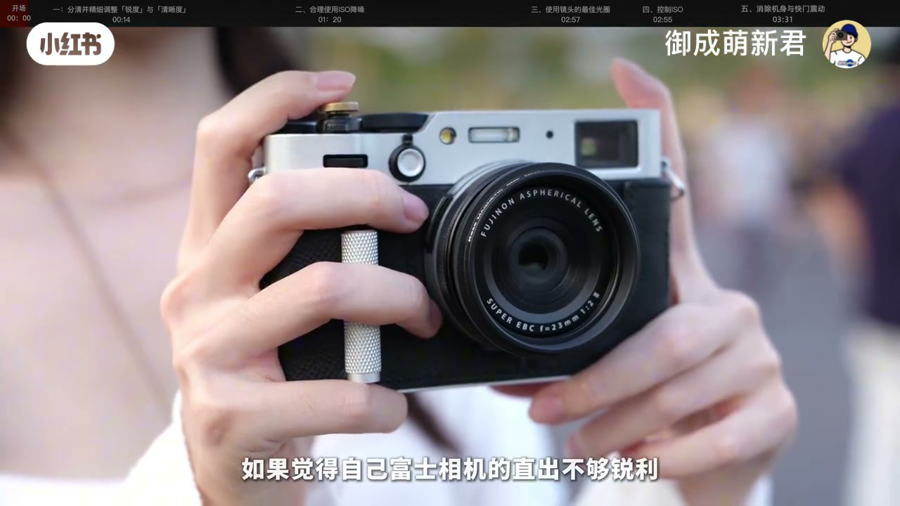
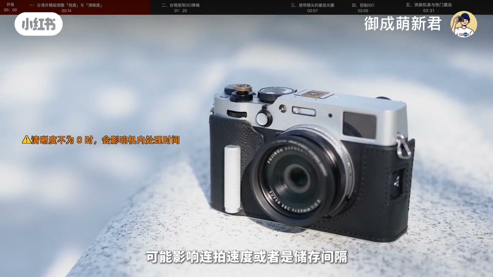
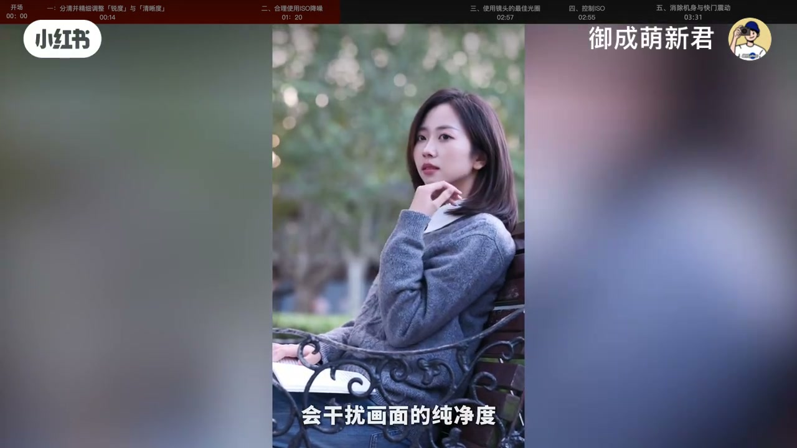
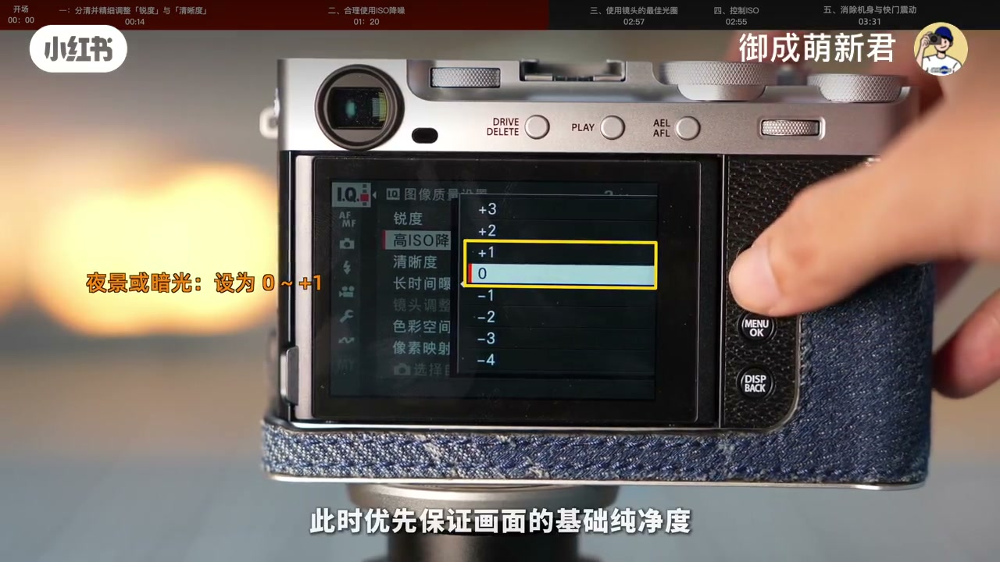
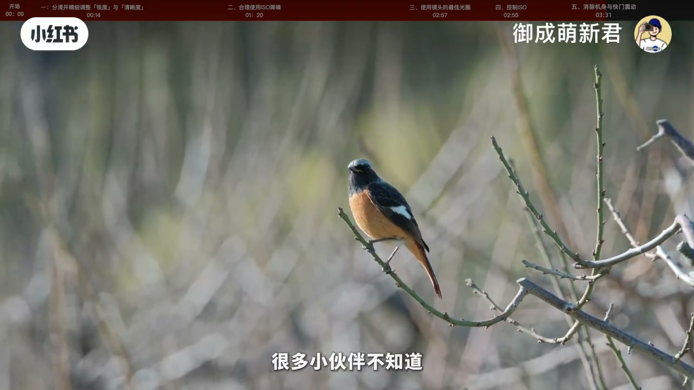

一、分清锐度与清晰度
锐度强化边缘纹理；清晰度更像整体对比，接近去朦胧/加柔焦，影响通透氛围。风景扫街锐度建议 +2～+3，别过高以免白边；人像过高会显皮肤糙。追求清透可把清晰度试到 +1～+3；光线本就硬时过高会放大暗部噪点。清晰度非 0 会加机内处理时间，可能拖连拍/存储；Auto 模式下清晰度不可调。

[00:08] 直出不够锐？先别换镜头——从机内锐度/清晰度分工看起
Soft JPEG? Start by splitting Sharpness vs Clarity in-camera.
[00:40] 扫街锐度约 +2～+3；清晰度影响通透，过高易出白边与噪点
Street: Sharpness ~+2–+3; Clarity adds punch but can halo/noise.

[01:10] 清晰度≠0 会吃处理时间，可能拖慢连拍或写卡间隔
Non-zero Clarity costs processing—burst/write gaps may grow.
二、按场景用高感降噪
高感降噪过高会抹平细节；但永远锁最低也不最优——暗光未处理噪点会逼你后期更狠地抹。白天可偏低保留纹理；傍晚/室内用弱降噪平衡；夜景可到 0 或略加，优先纯净度。更能治本的是大光圈或三脚架把 ISO 压下来。

[01:50] 降噪按光线动态调：白天保纹理，暗光保纯净，别一刀切锁死
Tune NR by light: keep texture by day, cleanliness at night—no forever-min lock.
三至五：光圈、ISO、快门震动
大多镜头收 1–2 档最锐；富士镜头常见甜区约 F4–F8，全开易软，小于 F11 衍射又软。自动 ISO 飙到 3200+ 易触发涂抹；尽量控在 1600 内，必要时 RAW 留给后期。另查电子前帘/电子快门，减轻机震糊。

[02:35] 收 1–2 档找分辨率甜区；全开软、过小衍射——机内锐化救不了前期
Stop down 1–2 stops for peak sharpness; wide-open soft, tiny apertures diffract.
[02:55] 压 ISO（经验≤1600）比硬扛高感再涂抹更稳；高感优先考虑 RAW
Keep ISO low (≈≤1600) vs smearing NR; shoot RAW if high ISO is forced.
[03:20] 安全快门之外，试电子前帘/电子快门，减少机身与快门微震
Besides safe shutter, try EFCS/electronic shutter to cut micro-shake.

[03:35] 五步合在一起：设定分工 + 场景降噪 + 光学基础 + 低感 + 减震
Five levers: sharpening split, NR by scene, optics, low ISO, less shake.
小结
涂抹感往往是「机内算法 + 高感 + 软光圈 + 微震」叠出来的，不是单一菜单。